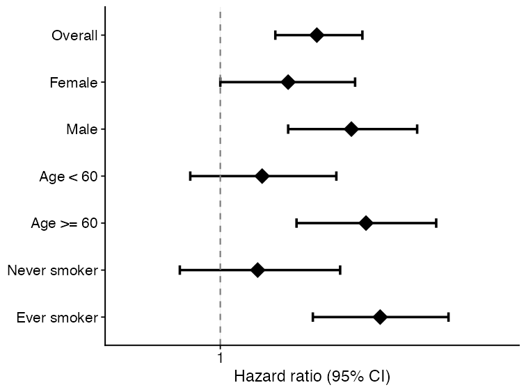
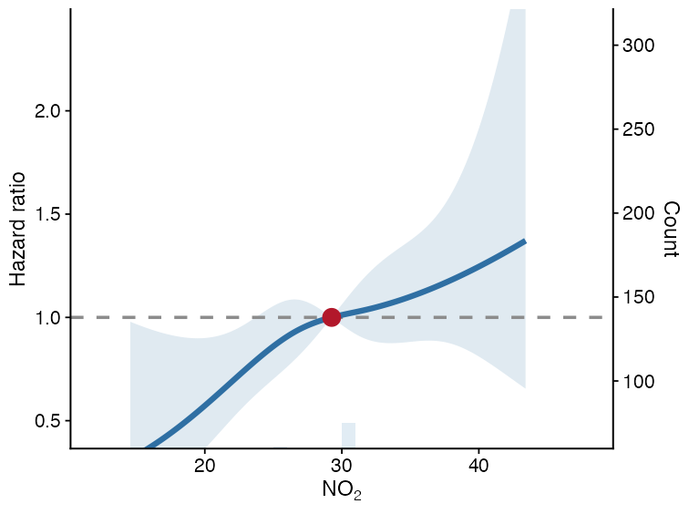
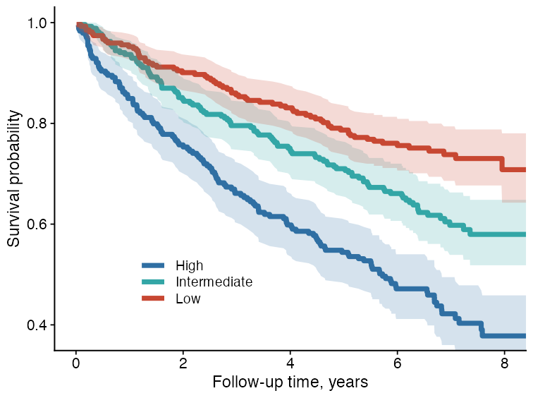
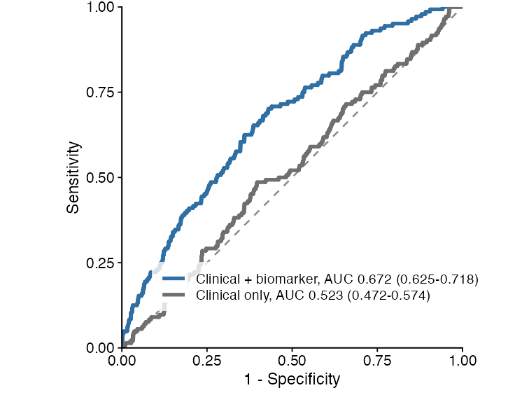
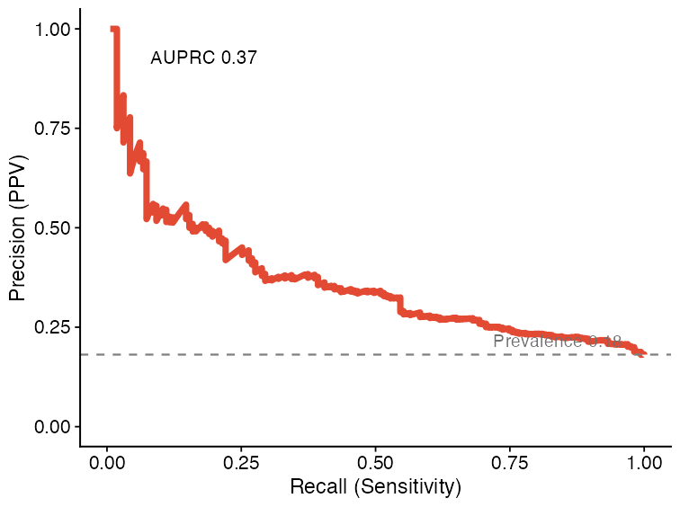
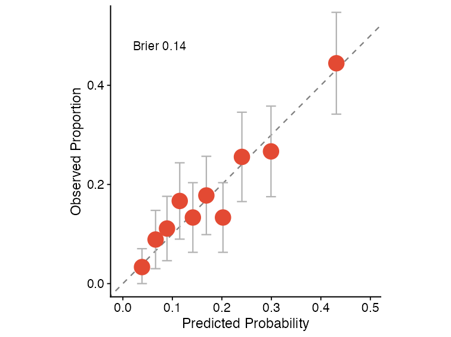
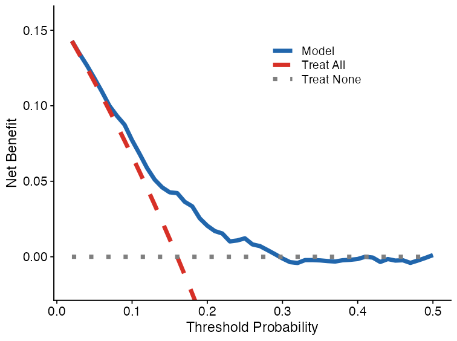
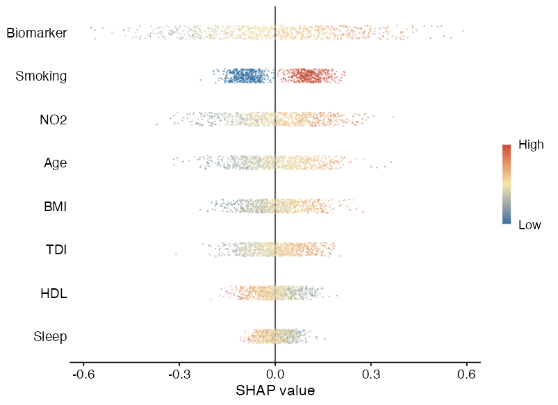
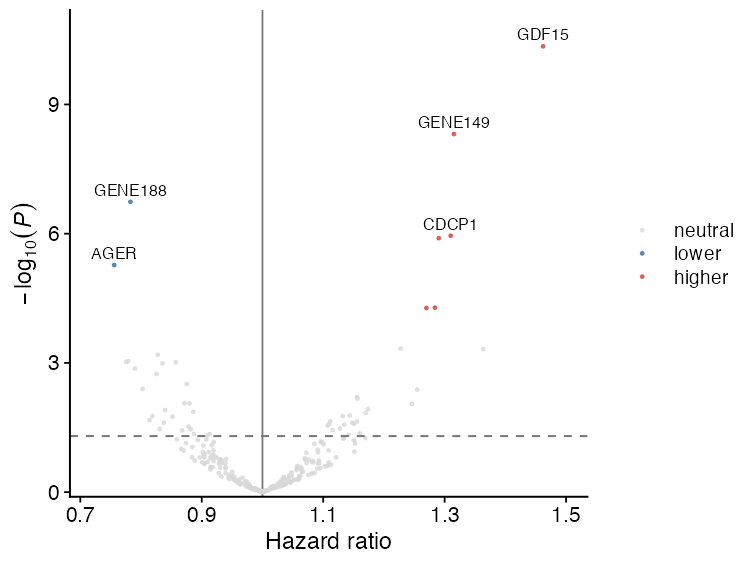

forest_df <- data.frame(
subgroup = c("Overall", "Female", "Male", "Age < 60", "Age >= 60"),
estimate = c(1.18, 1.05, 1.32, 0.96, 1.41),
lower95 = c(1.03, 0.86, 1.08, 0.78, 1.12),
upper95 = c(1.35, 1.28, 1.62, 1.18, 1.78),
n = c(240, 122, 118, 104, 136),
n_event = c(91, 43, 48, 34, 57)
)
plot_forest(
forest_df,
title = NULL,
xlab = "Hazard ratio (95% CI)"
)Visualization
UKBAnalytica includes plotting helpers for common reporting tasks in UK Biobank analyses. These functions return ggplot2 objects, so users can further modify themes, labels, scales, and export settings with standard ggplot2 workflows.
The examples below use small simulated datasets only. They are intended to show function interfaces and expected outputs, not scientific results.
Module overview
| Visualization task | Main function | Typical input |
|---|---|---|
| Forest plot | plot_forest() |
Subgroup or regression summary table |
| Restricted cubic spline curve | run_rcs(), plot_rcs() |
Continuous exposure and adjusted model specification |
| Kaplan-Meier curve | plot_km_curve() |
Time, event status, and optional group column |
| ROC comparison | ukb_ml_roc_data(), plot_ml_roc_compare() |
Binary outcome and predicted probabilities |
| PR curve | plot_ml_pr() |
Precision-recall object from model predictions |
| Calibration curve | plot_ml_calibration() |
Decile-level predicted and observed risks |
| Decision curve analysis | plot_ml_dca() |
Threshold-specific net benefit table |
| SHAP beeswarm | plot_shap_beeswarm() |
ukb_shap object |
| Regression volcano plot | plot_regression_volcano() |
Cox/logistic/linear summary table |
Forest plot
Forest plots are useful for subgroup analyses, sensitivity analyses, or compact summaries of multiple effect estimates.

Restricted cubic spline curve
Restricted cubic spline (RCS) curves help inspect nonlinear dose-response relationships for continuous exposures. run_rcs() fits the model, and plot_rcs() draws the curve.
rcs_fit <- run_rcs(
data = analysis_data,
exposure = "no2_main",
covariates = c("age", "sex", "tdi", "smoking"),
model_type = "cox",
endpoint = c("outcome_surv_time", "outcome_status"),
backend = "ns",
knots = 4
)
plot_rcs(
rcs_fit,
xlab = "NO2",
ylab = "HR for incident arrhythmia"
)
The solid line is the estimated effect, the ribbon is the 95% confidence interval, and the dashed horizontal line is the null effect.
Kaplan-Meier curve
plot_km_curve() creates survival curves from follow-up time and event status. It can also add confidence intervals, censor marks, log-rank P values, and a risk table.
plot_km_curve(
data = sim_survival,
time_col = "time",
status_col = "status",
group_col = "group",
risk_table = FALSE,
conf_int = TRUE,
censor_marks = FALSE,
median_line = FALSE,
pvalue = TRUE,
palette = c("#2F6FA3", "#33A6A6", "#C74732"),
title = NULL,
xlab = "Follow-up time",
ylab = "Survival probability"
)
ROC curve comparison
Machine-learning predictions can be converted to tidy ROC data using ukb_ml_roc_data(). Multiple ROC tables can then be compared with plot_ml_roc_compare().
roc1 <- ukb_ml_roc_data(
truth = y,
prob = prob_model_1,
model_id = "model_a",
model_label = "Clinical + biomarker"
)
roc2 <- ukb_ml_roc_data(
truth = y,
prob = prob_model_2,
model_id = "model_b",
model_label = "Clinical only"
)
plot_ml_roc_compare(
list(roc1, roc2),
title = NULL
)
Precision-recall curve
PR curves are useful when the outcome is uncommon or when positive predictive value is more clinically relevant than specificity.
pr_obj <- ukb_ml_pr(
ml_model,
newdata = validation_data
)
plot_ml_pr(pr_obj, title = NULL)
Calibration curve
Calibration curves compare predicted risks with observed event proportions. They are useful for checking whether a model’s probabilities are numerically interpretable, beyond ranking performance.
cal_obj <- ukb_ml_calibration(
ml_model,
newdata = validation_data,
n_bins = 10
)
plot_ml_calibration(cal_obj, title = NULL)
Decision curve analysis
Decision curve analysis summarizes net benefit across threshold probabilities and compares model-guided decisions against treat-all and treat-none strategies.
dca_obj <- ukb_ml_dca(
ml_model,
newdata = validation_data,
thresholds = seq(0.01, 0.50, by = 0.01)
)
plot_ml_dca(dca_obj, title = NULL)
SHAP beeswarm plot
plot_shap_beeswarm() visualizes SHAP values from a ukb_shap object. Features are ranked by mean absolute SHAP value, and point color represents the normalized feature value.
plot_shap_beeswarm(
shap_object,
max_features = 8,
title = NULL
)
Regression volcano plot
Volcano plots are useful for high-dimensional regression summaries, such as protein-outcome or metabolite-outcome association scans. The x-axis is the effect estimate, and the y-axis is -log10(P).
cox_res$p_bh <- p.adjust(cox_res$pvalue, method = "BH")
plot_regression_volcano(
cox_res,
effect_col = "HR",
p_col = "pvalue",
adjusted_p_col = "p_bh",
label_col = "variable",
significance_cutoff = 0.05,
x_lab = "Hazard ratio",
y_lab = expression(-log[10](italic(P)))
)
Practical notes
- All plotting functions return
ggplot2objects. - Most functions accept
title = NULL, which is useful for manuscript panels where titles are added in figure legends. - Keep raw participant-level data inside RAP. These plots should be generated from RAP-side analysis tables or aggregate model outputs.
- For publication figures, save with explicit dimensions and resolution, for example
ggplot2::ggsave("figure.png", plot, width = 3.2, height = 2.4, dpi = 300).